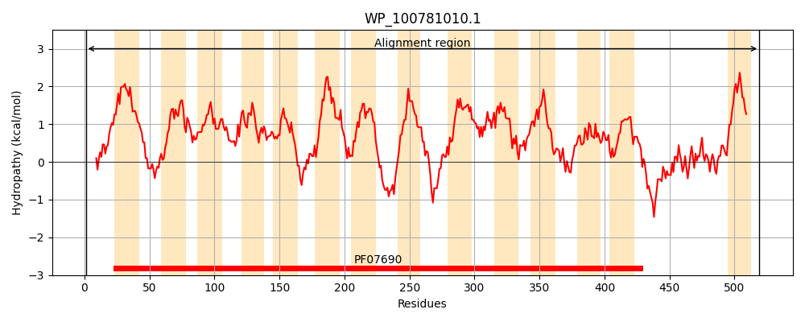
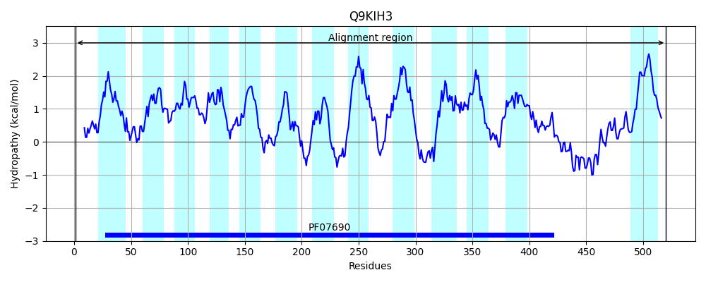
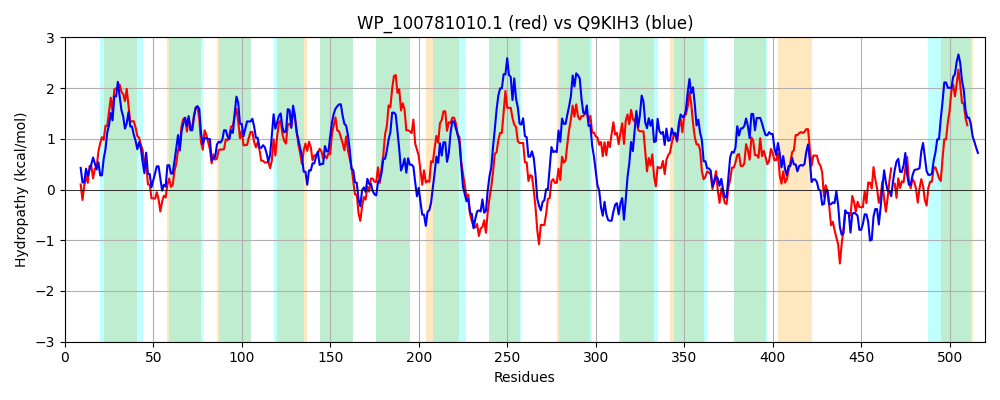

Hit Accession: Q9KIH3
Hit TCID: 2.A.1.3.18
Hit Description: gnl|BL_ORD_ID|18353 gnl|TC-DB|Q9KIH3|2.A.1.3.18 Putative transport protein RmrB - Rhizobium etli.
Mach Len: 520
e:0.000000
Query TMS Count : 14
Hit TMS Count: 13
TMS-Overlap Score: 12.150000
Predicted Substrates:CHEBI:30762;salicylate, CHEBI:5077;flavonoid, CHEBI:62488;signalling molecule, CHEBI:26115;phytoalexin, CHEBI:23888;drug
BLAST Alignment:
Score: 788 , Bit scores: 308 bits, E-value: 7.3e-99, Alignment length: 520, Percentage identity: 33
Query: 1 MSTVQALPAPQGLSMPTAKKIFAFASMCVGMFIALIDIQIVSASLRDIGGGLSAGDDETVWVQTSYLIAEIIIIPLSGWLARVMSTRWLFAASAAGFTLMSLLCGWAWNIQSMIAFRALQGLAGGSMIPLVFTTAFAFFQGKQRVIAAATIGGLASLAPTLGPTVGGWITENYNWHWLFFINVVPGIYIAVAVPLLVKVDSADPSLLRGADYLSILLLALSLGCLEYTLEEGPRWGWFDDATLTTTAWVALLCGVAFVIRTLRHPQPVMDLRALQDRTFSLGCYFSFMAGVGIFATIYLTPLYLGSVRGFSALEIGLAVFSTGLFQVMSIPFYSWLANRVDLRWLLMAGLIGFAVSMYSFVPITHDWGADQLLLPQAFRGLAQQFAVAPTVTLTLGSLPPARLKLASGLFNLMRNLGGAIGIALCGTVLNDRTNLHYSRLADHLNNANLAMSDFVQRSAANFTVQGIS-PDAAQTAALKNLSALALREARTQAFSDAFYLIMMGFLLAALLVPLMKKPPA 519
MST+ A + + A + +G F+A+++IQI +ASL DI GG+ G D W+ TSYLI EI++IPL+ + + V S R ++ F L S+ C +A ++ +MI R + AGG +IP+ FT Q+ + A + AP +GPT+GG++TENY W +FFIN P + +A A+ L + LL+ D+ I+ +A+ L L+ LEEG + WF + + VA + AF+ LR +P++ LR L R F +G + + GV +F T+Y+ P YLG V+ ++A +IG + TGL +V+ IP L D R++ G+ FA+S + + ++ D DQ +P R + Q + P +T + P ASGL N++RNLGGA+G A GT+L R H + + + + D + + + F G++ P A A+ L R+A FSD F +I + LAA+ + L KKP A
Sbjct: 1 MSTIAATAVAIAQPRASTRDWIAVLAGMIGAFMAILNIQITNASLLDIEGGIGTGVDNGAWISTSYLIGEIVVIPLTAYFSSVFSFRRYILVNSILFPLFSMACAFAQDLGTMILLRGFRAFAGGVLIPMAFTMVLTKLPKSQQPLGLAIFALSVTFAPAIGPTIGGYLTENYGWQTIFFINTAPSLIMADALALTLDKQPMQLHLLKEGDWAGIITMAIGLSALQTVLEEGNKDDWFSSPFIVKLSIVAFVFLAAFIWIELRVKKPLVKLRLLTQRNFGIGVLVNVLVGVALFGTVYILPQYLGQVQRYNAEQIGNVLAWTGLPKVLLIPLVPVLMKGFDARYIGFIGISIFAISCFMNIMLSADNAGDQFWIPNIVRAIGQALVLTPITAITTAGIAPVDAAAASGLTNMLRNLGGAVGTASLGTILTKREQFHSNIIGQSITLTRDEVRDRLGKLSGYFIQHGVTDPAVASQKAIVALGQTVKRQALIMGFSDTFAVIGVVLALAAIALLLTKKPQA 520 | Protein Hydropathy Plots: |
|---|
|  |  |
Pairwise Alignment-Hydropathy Plot:
|
|---|
|  |